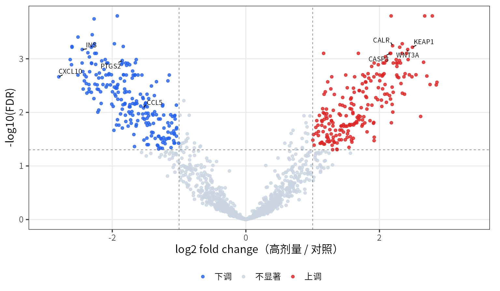
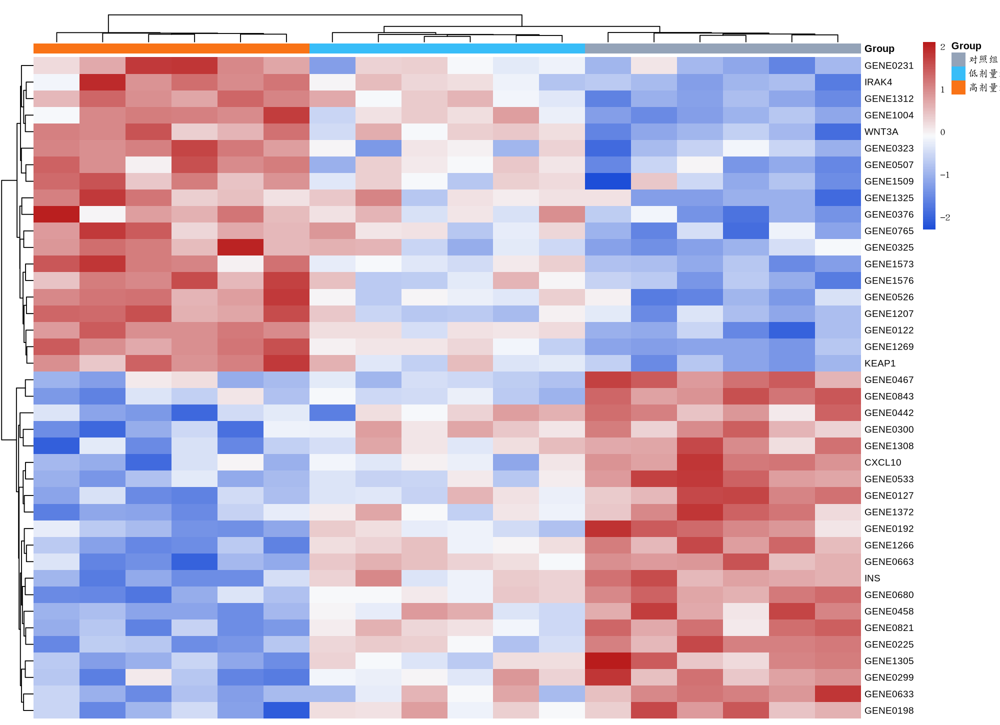

基因表达数据的可视化
从表达矩阵、差异分析到功能解释



示例分组：对照组 · 低剂量组 · 高剂量组（每组 6 个重复）
本讲内容
先认识数据
表达矩阵
差异表达结果
GO / Pathway 结果
差异表达结果
GO / Pathway 结果
再看五张图
小提琴图
火山图 · 聚类热图
GO / Pathway 图 · Venn 图
火山图 · 聚类热图
GO / Pathway 图 · Venn 图
最后连成故事
分布 → 差异
差异 → 模式
模式 → 功能与重叠
差异 → 模式
模式 → 功能与重叠
主线：先看数据长什么样，再让图回答生物学问题。
表达矩阵长什么样
| 基因 | Ctrl_1 | Ctrl_2 | Low_1 | Low_2 | High_1 | High_2 |
|---|---|---|---|---|---|---|
| CYP1A1 | 3.41 | 3.58 | 4.72 | 4.65 | 5.61 | 5.49 |
| HMOX1 | 4.80 | 4.95 | 5.85 | 6.02 | 6.94 | 7.11 |
| NQO1 | 5.12 | 5.28 | 6.10 | 5.98 | 7.02 | 6.88 |
| PPARG | 8.21 | 8.04 | 7.62 | 7.48 | 6.53 | 6.71 |
| INS | 9.85 | 9.72 | 8.60 | 8.74 | 7.51 | 7.38 |
| GAPDH | 12.42 | 12.38 | 12.45 | 12.40 | 12.51 | 12.44 |
数值为 log2(TPM + 1)；这里只展示部分基因与样本。
CYP1A1、HMOX1 随剂量升高，PPARG、INS 随剂量下降；GAPDH 基本不变。
表达矩阵是怎么来的？
测序RNA-seq 产生 reads
→
比对 / 定量STAR、featureCounts 统计基因 reads
→
表达矩阵基因 × 样本的 counts 表
→
质控与标准化过滤低表达，TPM / vst，log2
- 低表达基因噪声大，先过滤，减少多重检验负担
- 样本测序深度不同，必须标准化后才能比较
- log2 让上调与下调对称，也便于画热图和火山图
这一步的输出，就是一张“基因 × 样本”的数值表。
差异表达数据怎么来的？
- 实验设计：对照组、低剂量组、高剂量组，每组 6 个重复
- 两两比较：低剂量 vs 对照、高剂量 vs 对照、高剂量 vs 低剂量
- 输入表达矩阵和分组信息，用
limma-voom、DESeq2或edgeR建模 - 每个基因输出：
log2FC（变化幅度）、p 值、FDR（校正后 p 值）
log2FC
组间均值差（log2 尺度）；2 表示升高 4 倍，−2 表示降低 4 倍
p value
单个基因检验得到的原始显著性
FDR
Benjamini–Hochberg 校正后的 p 值，控制假阳性
判定
|log2FC| ≥ 1 且 FDR < 0.05 记为差异基因
差异表达不是“看图看出来的”，而是对每个基因做统计检验。
差异表达结果表长什么样
| 基因 | log2FC | p value | FDR | 调控 |
|---|---|---|---|---|
| CYP1A1 | 2.08 | 3.9e−05 | 0.0012 | 上调 |
| HMOX1 | 2.05 | 3.6e−05 | 0.0012 | 上调 |
| KEAP1 | 2.49 | 6.4e−06 | 0.00061 | 上调 |
| INS | −2.45 | 8.1e−06 | 0.00067 | 下调 |
| PPARG | −1.73 | 0.0026 | 0.0138 | 下调 |
| CXCL10 | −2.80 | 1.4e−04 | 0.0022 | 下调 |
比较：高剂量组 vs 对照组；阈值 |log2FC| ≥ 1 且 FDR < 0.05。
显著性看 FDR，变化幅度看 log2FC；两者都过阈值才算差异基因。
GO 富集结果表长什么样
| 条目（Term） | 本体 | Count | GeneRatio | FDR |
|---|---|---|---|---|
| apoptotic process | BP | 120 | 0.56 | 7.6e−84 |
| inflammatory response | BP | 101 | 0.47 | 4.7e−71 |
| cytokine-mediated signaling pathway | BP | 92 | 0.43 | 1.5e−69 |
| response to oxidative stress | BP | 79 | 0.37 | 2.7e−58 |
| cell cycle arrest | BP | 74 | 0.35 | 1.3e−53 |
| glutathione metabolic process | BP | 48 | 0.22 | 1.8e−36 |
GeneRatio = 命中差异基因数 / 差异基因总数；MF、CC 的结果表结构相同。
FDR 越小越可靠；GeneRatio 帮助判断这个条目覆盖了多少差异基因。
五种图，五个问题

小提琴图
火山图
聚类热图

GO / Pathway
Venn 图
先确定问题，再选图：分布、差异、模式、功能、重叠。
小提琴图：看表达分布
library(ggplot2)
ggplot(expr, aes(group, value, fill = group)) +
geom_violin(trim = FALSE, alpha = .7) +
geom_boxplot(width = .12, fill = "white") +
geom_jitter(width = .09, size = 1, alpha = .6) +
facet_wrap(~gene, scales = "free_y") +
labs(x = NULL, y = "log2(TPM + 1)") +
theme_bw()- 每个小提琴是一组样本的表达分布，宽处表示样本集中
- 箱线和中位线补充统计量，散点保留每个重复
- 本图：CYP1A1、HMOX1 随剂量升高，PPARG 随剂量下降
比较两组以上表达量时，先看分布，不只看均值。
GO 富集图：功能方向
ggplot(go, aes(GeneRatio,
reorder(Description, GeneRatio))) +
geom_point(aes(size = Count,
color = -log10(padj))) +
scale_color_viridis_c() +
scale_size_continuous(range = c(2.5, 7.5)) +
labs(x = "GeneRatio", y = NULL) +
theme_bw()- 横轴 GeneRatio，点大小 = 命中基因数，颜色 = −log10(FDR)
- 越靠右、点越大、颜色越暖，富集越强
- 本图展示 BP；MF、CC 可用同一模板分别出图
优先汇报与表型相关的条目，而不是只看 FDR 最小。
Venn 图：三组差异基因的重叠
library(ggforce)
ggplot() +
geom_circle(aes(x0 = x0, y0 = y0, r = r,
fill = set), alpha = .42) +
geom_text(data = region,
aes(x, y, label = n)) +
coord_fixed() +
theme_void()- 三个集合：低 vs 对照、高 vs 对照、高 vs 低
- 三圆交集（67 个）是剂量共同响应基因
- 单侧特有区域反映低剂量或高剂量特异响应
Venn 回答“哪些基因共享、哪些只在某一比较中出现”。
什么问题，配什么图
看分布
小提琴图：同一基因在对照组、低剂量组、高剂量组中的表达分布
看差异
火山图：全部基因的变化幅度与显著性，一屏掌握差异格局
看模式
聚类热图：样本是否按剂量分开，基因是否成簇协同变化
看功能
GO / Pathway 富集图：差异基因集中在哪些生物学过程与通路
看重叠
Venn 图：不同比较之间共享的与特异的差异基因
一张图只回答一个问题；组合起来才构成完整证据链。
完整分析流程回顾
表达矩阵基因 × 样本
→
过滤与标准化log2 转换
→
差异分析log2FC + FDR
→
差异基因列表上调 / 下调
→
功能富集GO / Pathway
→
五类图分布·差异·模式·功能·重叠
图是分析结果的可视化，不是分析的起点。
判断一张图是否可信，先回到数据与统计：样本量、标准化、阈值与多重检验。